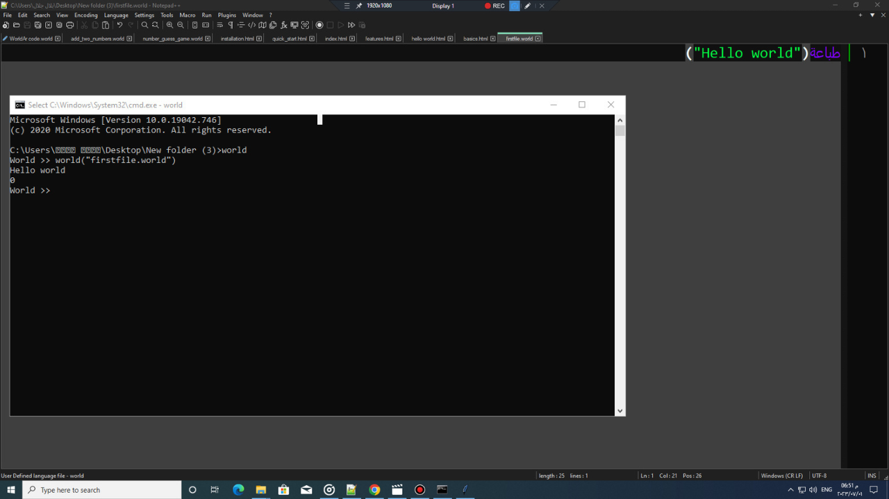

First line of code
Steps :
- First write the command "world" to log in to the language interpreter
- Now write this line of code:
- Result: أهلا بالعالم.
If you set the language mode to English: - Result: Hello world.
The underlying structure follows the function parameter pattern:

طباعة( "أهلا بالعالم" )
Terminal Output
أهلا بالعالم
print( "Hello world" )
Terminal Output
Hello world
function_name( "parameter" )
Run the program :
- To execute a saved file, use the built-in "world" runner function:
world( "Filename.world" )
Terminal Output
Executing Filename.world...
[Process completed with exit code 0]
[Process completed with exit code 0]
